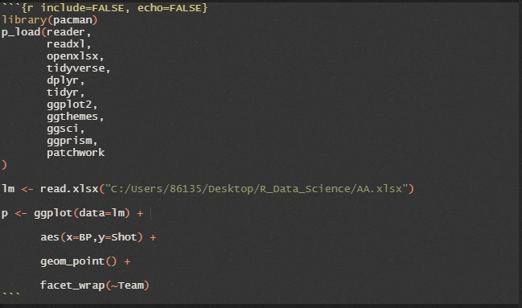

第 5 章 数据交流
5.1 R markdown
R markdown可以生成可重复性报告，是R语言社区重要的交流工具。在学习R markdown之前，我们首先需要了解一下Markdown。
5.1.1 Markdown介绍
Markdown是一种轻量级标记语言，可以使用它在纯文本文档添加格式化元素。Markdown由John Gruber在2004年创建，目前是世界上最流行的标记语言之一。与常见的office文本编辑器(如Microsoft word等)不同，在Markdown中对文本格式的更改并不是立即可见的。Markdown的运行逻辑是：在创建Markdown格式的文件时，用户可以在纯文本中添加Markdown语法，以指示哪些单词和短语应该以何种方式进行格式化。
例如，要表示一级标题，我们可以在一级标题前面添加符号#(例如# 一级标题)。或者想让一个短语加粗，我们可以在短语前面和后面各加两个星号(例如，**这个文本是加粗的**)
5.1.2 Markdown的优越性
前面提到，Markdown已经是世界上最流行的轻量级标记语言之一。你可能会问，常见的所见即所得文本编辑器不是更好吗？为什么要使用Markdown呢？其相对于Microsoft word等一类的文本编辑器有何优越性呢？事实上，Markdown确实存在其诸多优越性，主要体现在如下五个方面：
Markdown几乎可以用于任何文本编辑场景。包括创建网站、文档、笔记、书籍、演示文稿、电子邮件信息和技术文档等。
Markdown拥有极强的可移植性。包含markdown格式文本的文件几乎可以使用任何应用程序打开。因此如果你不喜欢当前的Markdown应用程序，你可以将Markdown文件导入至另一个Markdown应用程序。相比较而言，Microsoft word等文字处理应用程序将内容锁定为专有文件格式，为处理文本带来诸多不便。
Markdown拥有极强的跨平台特性。因此，可以在任何操作系统的设备上创建markdown格式的文本并编辑。
Markdown具有更加可靠的可持续性。既是当前的Markdown应用程序在将来某个时候停止工作，我们仍然可以使用文本编辑应用程序呈现和阅读markdown格式的文本。当涉及到书籍、论文和其他需要无限期保存的文件时，这是一个重要的因素。
Markdown使用范围广。我们几乎可以在任何地方看见Markdown的存在，像Reddit和GitHub这样的网站支持Markdown语法，许多桌面和基于网络的应用程序也支持它，用户还可以在macOS, Windows, Linux, iOS和Android等操作系统的设备上选择众多Markdown应用程序进行使用，而且还有一些基于web的应用程序专门为Markdown编写而设计。
根据所使用应用程序的不同，用户在使用Markdown时可能无法实时预览格式化的文档。但是没关系，根据Gruber的说法，Markdown语法被设计成可读且不引人注目的，因此Markdown文件中的文本即使没有呈现也可以被轻松阅读。
5.1.3 Markdown语法介绍
Markdown提供了多样全面的格式化选项，如下表所示：
| 格式化选项 | Markdown语法 |
|---|---|
标题 |
# 一级标题 ## 二级标题 ### 三级标题 |
| 加粗 | **加粗字体** |
| 斜体 | *倾斜字体* |
| 引用 | > 引用 |
有序列表 |
1. 第一 2. 第二 3. 第三 |
无序列表 |
- 第一 - 第二 - 第三 |
| 代码 | `print(“你好,世界”)` |
| 超链接 | [超链接](https://www.tsinghua.edu.cn/) |
| 图片 |  |
表格 |
| 字段1 | 字段2 | | --- | --- | | 内容1 | 内容2 | |
这里我们只是对Markdown的一些常见语法进行了基本介绍，关于Markdown语法的系统性学习请读者自行参考相关拓展资料。
5.1.4 从Markdown到R markdown
Markdown虽然能够对文本轻松进行格式化操作，但是却无法直接运行R代码。于是，为了方便R社区中代码展示和文本格式化的双重需求，R markdown应运而生。R markdown集成了Markdown的内部语法，能够保留Markdown语法进行文本格式化，并在此基础上同时允许直接运行R代码块、展示运行结果和格式化代码块运行结果。用户可以通过如下方式插入并运行R代码块:

代码块头部花括号内可以设置代码块展示选项，相应的参数包括：
echo：在报告中是否展示代码块，默认为TRUEinclude: 在报告中是否展示代码块以及代码运行的结果，默认为TRUEeval: 是否运行代码块，默认为TRUEtidy: 是否在显示代码的时候进行formatR对R源代码进行格式化处理，默认为FALSEwarning: 是否在报告中显示警告信息，默认为FALSEerror: 发生错误时是否继续运行代码块，默认为FALSEresults: 该参数用于控制文本输出是否显示以及如何显示,有四个选项，包括markup,asis,hold和hide。markup选项代表对输出做一定的修饰，比如对输出的向量加上代码块的符号，是默认选项；asis是非常有用的选项，可以在代码结果中引入Markdown语法，代码的输出结果可以生成标题；hold会将代码的输出文本收集起来，并在文件最后进行输出；hide表示隐藏文本输出。fig.show：该参数用于控制图片输出是否显示以及如何显示，也有四个选项，包括asis,hold,hide和animate。其中asis是默认选项，即显示图片并将其放置在代码生成的位置；hold和hide的含义同上；animate选项可以将生成的多幅图片转换为动画。fig.height：控制输出图片的物理高度fig.width：控制输出图片的物理宽度out.height：控制输出图片的相对显示高度out.width：控制输出图片的相对显示宽度
完成R markdown的编写后，我们可以在文件的头部添加标题、作者、日期和输出格式等选项，其中输出支持html，pdf和word等多种格式。比如如下的设置标明了作者信息并指定输出格式为html：
---
title: "R markdown"
author: "Tsinghua University"
date: "2022-10-26"
output: html_document
---5.2 R shiny
Shiny是R中的一种Web开发框架，使得R的使用者不必太了解css、js只需要了解一些html的知识就可以快速完成web开发，且shiny包集成了bootstrap、jquery、ajax等特性，极大解放了作为统计语言的R的生产力。使得非传统程序员的R使用者不必依赖于前端、后端工程师就可以自己依照业务完成一些简单的数据可视化工作，快速验证想法的可靠性。
5.3 R bookdown
5.3.1 介绍
R的bookdown扩展包(https://github.com/rstudio/bookdown) 是继knitr和rmarkdown扩展包之后， 另一个增强markdown格式的扩展， 使得Rmd格式可以支持公式、定理、图表自动编号和引用、链接， 文献引用和链接等适用于编写书籍的功能。 在bookdown的管理下一本书的内容可以分解成多个Rmd文件， 其中可以有可执行的R代码， R代码生成的文字结果、表格、图形可以自动插入到生成的内容中， 表格和图形可以是浮动排版的。 输出格式主要支持gitbook格式的网页图书， 这种图书在左侧显示目录， 右侧显示内容， 并可以自动链接到上一章和下一章； 通过单独安装的LaTeX编译器支持将书籍转换为一个PDF文件， 支持中文； 可以生成ePub等格式的电子书。
主要用于编写有多个章节的书籍， 也可以用来生成单一文件的研究报告。
建议使用RStudio集成环境制作这样的图书， 该软件内建了一键编译整本书的功能。 需要安装bookdown扩展包的最新版本。 bookdown扩展包现在还比较新， 还有一些BUG， 所以尽可能使用最新版的bookdown扩展包并且及时更新RStudio软件。 查看编译的网站建议使用Google Chrome浏览器， 此浏览器对gitbook的支持较好。
为了新写一本书或者从已有的书转换， 最简单的做法是从bookdown的网站下载bookdown配套的例书的zip文件 (见https://github.com/rstudio/bookdown-demo)， 将其解压到本地硬盘某个子目录， 然后修改其中的内容适应自己的书的需要。
因为中文需要一些特殊的设置， 以及在网络条件不好的条件下支持数学公式显示， 本书作者提供了一个粗浅的中文书bookdown模板， 下载链接为:
bookdown-template-v0-6.zip
其中的CBook子目录包含了所需的中文书模板， CArticle子目录包含了论文格式模板， 其它子目录有一些别的模板， 为了在本地支持网页中的数学公式显示还有一个MathJax目录。 参见其中的readme.txt说明文件。
5.3.2 章节结构
除了index.Rmd文件, 项目中每个.Rmd文件都作为一章。 每个.Rmd文件第一行， 应该是以一个井号和空格开头的一级标题, 后面再加空格然后有大括号内以井号开头的章标签，
这些章标签去掉井号后会作为生成的HTML文件的名字， 所以一定要有章标签， 而且章节标签在全书中都不要重复以免冲突。 文件内可以用两个井号和一个空格开始的行表示节标题， 最后也应该有大括号内以井号开头的节标签,
使用bookdown写书， 一般每章不要太长， 否则编译预览很慢， 读者浏览网页格式也慢。
内容相近的章节可以作为一个“部分”。 为此， 在一个部分的第一个章节文件的章标题前面增加一行， 以 # (PART)开头， 以{-}结尾， 中间是部分的名称，书的最后可以有附录， 附录的章节将显示为A.1, B.1这样的格式。
5.3.3 书的编译
建议使用RStudio软件编辑内容， 管理和编译整本书。
在index.Rmd或者_bookdown.yml中设置site: bookdown::bookdown_site后， RStudio就能识别这个项目是一个bookdown项目， 这时RStudio会有一个Build窗格，其中有“Build book”快捷图标， 从下拉菜单中选择一个输出格式（包括gitbook、pdf_book、epub_book）， 就可以编译整本书。 对gitbook格式， 即HTML网页格式， 编译完成后会弹出一个预览窗口， 其中的“Open in Browser”按钮可以将内容在操作系统默认的网络浏览器中打开。
将书编译为PDF需要利用LaTeX编译器， 这需要单独安装LaTeX编译软件， LaTeX编译器对输入要求十分严格， 一丁点儿错误都会造成整本书的编译失败， 所以对于不熟悉LaTeX的用户， 不建议使用bookdown的pdf_book输出格式。 当前的R Markdown仅支持谢益辉的TinyTeX软件， 安装和管理参见22.12.1。
对于较短的书， 做了一定修改后都可以重新编译gitbook结果和pdf_book结果。 在书比较长了以后， 每次编译都花费很长时间， 所以可以仅编译gitbook格式的一章， 修改满意后再编译整本书。 仅编译一章也需要所有的.Rmd文件都是已经编译过一遍的， 新增的Rmd文件会使得编译单章出错， 每次新增了Rmd文件都应该重新编译整本书， 但是内容修改后不必要重新编译整本书， 可以仅编译单章。
编译完成后在结果目录（默认是_book）中找到相应的HTML文件打开查看， 再次编译后仅需在浏览器中重新载入文件。 建议使用Google chrome浏览器， 用MS IE或者Edge浏览器对gitbook的Javascrpt支持不够好， 使得目录的层级管理、自动滚动、单章编译后的目录更新不正常， 而chrome则没有问题。
编译单章也不能解决所有的问题， 有些问题还是需要编译整本书， 而章节很多时整本书编译又太慢。 为此， 可以在项目中增加一个临时的部分内容子目录， 如testing子目录， 在子目录中存放相同的设置文件index.Rmd、_bookdown.yml、_output.yml， 以及图形文件、文献数据库文件， 并将要检查的若干章节复制到testing子目录中， 在testing中新建一个bookdown项目， 然后编译其中的整本书。 这在调试部分章节的HTML和PDF输出时很有效。 解决问题后只要将修改过的章节复制回原始的书的目录中。
有时仅仅想验证某个长数学公式或者表格， 用上述的编译单章或者单独一个小规模测试项目的办法也不经济。 这时，单独开一个备用的普通RStudio项目， 不能是bookdown项目， 在其中的Rmd文件中验证数学公式和表格的编排， 这样最为方便。
有时需要根据编译输出目标采用不同的设置， 比如， 输出为html时可以使用HTML插件(widgets)， 而输出到PDF则不可以。 可以用 knitr::opts_knit$get("rmarkdown.pandoc.to") 感知当前编译过程的目标， 对HTML类，输出为”html”， 对PDF，输出为”latex”。
5.3.4 交叉引用
在写作时，每个一级到三级标题都应该有自定义的标签， 格式是在标题行末尾空格后添加{#label}， 其中label是自己指定的标签， 使用英文、数字、减号， 不要使用中文， 而且整本书不要有重复的标签。 为避免不同章节使用了重复标签， 可以取label的前一部分为所在章节的文件名。
如果要引用某一章节， 有如下的做法：
§\@ref(label)
label是某个标题对应的标签。 结果显示为如§3.1.1这样的章节号，并可点击， 点击时跳跃到相应的章节。
[链接文本](#label) 其中label是某个标题对应的标签。 结果产生一个链接，显示为链接文本，点击时跳到label对应的章节。
有时需要在数学公式内部、图形的说明中引用定理编号、公式编号等， 这需要预先定义单独的文字性引用， 然后再使用该文字引用。 定义文字引用如：
(ref:mytextlabel) 见定理\@ref(thm:orth)
可以在数学公式内部、图形说明的字符串内用(ref:mytextlabel)的格式调用上面定义的文字引用。 目前在数学公式内部使用有BUG。
5.3.5 数学公式和公式编号
通过R的knitr和rmarkdown扩展包以及pandoc软件， .Rmd格式文件已经支持数学公式， 见R Markdown说明。
在用$$符号在两端界定的公式后面， 可以用\tag{标号}命令增加人为的公式编号，如
\[ y = f(x) \tag{*} \] 结果显示为
要注意的是， 在$$界定的数学公式内用了aligned环境后， 仅能在\end{aligned}之后加\tag{标号}命令， 而不能写在aligned环境内。 这样， 多行的公式将不能为每行编号。
用\tag命令人为编号比较简单易用， 但是在有大量公式需要编号时就很不方便， 只要增加了一个公式就需要人为地重新编号并修改相应的引用。 bookdown包支持对公式自动编号， 并可以按公式标签引用公式， 引用带有超链接。
bookdown的自动编号对LaTeX的equation环境、align环境都可以使用， 而且不需要在两端用$$界定。 在公式的末尾或者一行公式的\换行符之前， 写\((\#eq:mylabel)\)， 其中mylabel是自己给公式的文字标签， 文字标签可以使用英文字母、数字、减号、下划线。 如
\[
\begin{align}
f(x) =& \sum_{k=0}^\infty \frac{1}{k!} x^k \tag{5.1} \\
= e^x \tag{5.2}
\end{align}
\]
将会对两行公式自动编号。 引用公式时， 用如\(\@ref(eq:mylabel)\)，其中mylabel是公式的自定义标签， 编译后这样的引用会变成带有链接的圆括号内的编号。
公式编号在全书中都不要有冲突（不同的公式定义了相同的编号）。 一种办法是，自定义的公式标签的开头以章节文件名开头。
5.3.6 定理类编号
定理、引理、命题、例题等， 使用特殊的markdown代码格式， 以三个冒号开头， 以三个冒号结尾， 在开头的三个反单撇号后面空格后写{.theorem}表示定理。 在.theorem后面， 可以用空格分隔后写一个定理的自定义标签， 标签以#开头，由字母、数字、减号组成， #号作为标签的开头标志但不作为标签的一部分。 可以用name=“定理名称”指定一个显示的定理名。
设某个定理的自定义标签是#mythlabel， 则可以用如\@ref(thm:mythlabel)引用此定理的编号， 编号是在每一章内从头编号的。 编号有自动生成的链接。
例如：
Theorem 5.1 (弱收敛) \(\xi_n\)依分布收敛到\(\xi\)， 当且仅当对任意\(\mathbb R\)上的一元实值连续函数\(f(\cdot)\)都有 \[ E f(\xi_n) \to E f(\xi), \ n \to \infty . \]
当定理或例子内有列表时， 一定注意列表前后要空行， 否则会导致嵌套错误。 这种错误在编译HTML时无法发现， 但是会造成结果莫名其妙地出错。
bookdown提供了证明环境， 但是不太实用。
对例题， 将theorem替换成example， 在引用时将thm替换成exm。 如：
Example 5.1 (依概率收敛不a.s.收敛反例) a.s.收敛推出依概率收敛， 但是反之不然。给出反例。
定理类的段落包括如下的种类：
表: 定理类段落
| 环境名 | 默认显示名 | 标签前缀 |
|---|---|---|
| theorem | Theorem | thm |
| lemma | Lemma | lem |
| corollary | Corollary | cor |
| proposition | Proposition | prp |
| conjecture | Conjecture | cnj |
| definition | Definition | def |
| example | Example | exm |
| exercise | Exercise | exr |
其中的显示名可以在_bookdown.yml的language的label属性中修改.
5.3.7 文献引用
bookdown使用.bib格式的文献数据库， 关于.bib格式的文献数据库请参考LaTeX的有关说明。 在index.Rmd的YAML元数据部分或者_bookdown.yml中用bibliography可以设置使用的一个或者多个.bib格式的文献数据库文件。 设某篇文章的.bib索引键是Qin2007:comp， 用 @Qin2007:comp可以引用此文献， 用[@Qin2007:comp] 可以生成带有括号的引用， 引用都有超链接。
指定.bib文件时可以用相对路径， 如“../docs/mybib.bib”。
5.3.8 插图
bookdown图书的插图有两种， 一种是已经保存为图形文件的， 主要是png、jpg和pdf图片； 另一种是文中的R代码生成的图形。
已经有图形文件的， 可以用markdown格式原来的插图方法， 见markdown格式介绍。 但是，这样做不能给图形自动编号， 另外因为制作图书是有网页和PDF书两种主要输出格式的， 原有的插图方式在这两种输出格式上有细微的不一致。 所以，最好是统一使用Rmd的插图方法。
Rmd的插图方法就是写一段R代码段来插图， 如果是用程序作图，则代码中写作图的代码； 如果是已有的图形文件， 可以在一个单独的R代码段中用类似下面的命令插图：
knitr::include_graphics("figs/myfig01.png")
其中figs是存放图形文件的子目录名， myfig01.png是要插入的图形文件名。 这样， 如果同时还有myfig01.pdf的话， 则HTML输出使用png图片而PDF输出自动选用pdf文件。 另外， 插图的选项在代码段的选项中规定： 用代码段的fig.with和fig.height选项指定作图的宽和高（英寸）， 用out.width和out.height选项指定在输出中实际显示的宽和高， 实际显示的宽和高如果使用如”90%“这样的百分数单位则可以自动适应输出的大小。
为了使得插图可以自动编号并可以被引用， 为代码段指定标签并增加一个fig.cap="..."选项指定图形标题。 代码段的标签变成浮动图形的标签，如myfiglabel， 则为了引用这个图只要用\@ref(fig:myfiglabel)。 注意，在整本书中这些标签都不能重复， 否则编译LaTeX支持的PDF输出会失败。
有些插图会伴随很长的说明文字， 这可以用代码段的fig.cap=选项指定， 但是其中的Markdown特有的格式在转换LaTeX时不一定支持， 而且在代码段选项中写太长的文字说明也是的程序难以辨认。 所以， 可以使用文字引用的方式： 在单独的一段中， 用如下格式定义一段可引用的文字内容：
(ref:mylabel) 这里用实际的文字内容代替，不允许换行，不能分段。
其中mylabel是自己定义的仅由英文大小写字母、数字和减号组成的引用标志符。在需要使用这段文字的位置，用(ref:mylabel)这种格式引用。 注意定义和引用都是用的(ref:mylabel)语法。
用R生成PDF格式的图形时， 需要指定中文作为family选项， 所以在每个源文件的开头应该加上如下的设置， 使得生成PDF图时中文能够正确显示：
pdf.options(family="GB1")5.4 R blogdown（博客）
用R Markdown创建网站
5.4.1 R blogdown 简介
R blogdown 是什么?
- R语言的一个扩展包，用来制作网站的工具。
- 可以用非常简洁的方式快速搭建静态网页构成的网站。
- 虽然名字里有“博客”（blog）字样，但并不仅限于博客。非常适合搭建一个科研小组的展示窗口。
- 基于 markdown 扩展语法，可以在网页中方便地插入图表、脚注、数学公式、R 代码等元素。
- 非常容易将 bookdown 生成的论文转化成网页展示。
- 非常易于维护，迁移，备份。
- blogdown 的背景平台是 R 语言，用户界面首选 RStudio ，产生的网站框架是 Hugo
blogdown有两个主要的亮点： * 它制作的是静态网站，也就是说，网站只由静态文件组成，如HTML、CSS、JavaScript和图片等。你可以把网站托管在任何网络服务器上。该网站不需要像WordPress那样的服务器端脚本，如PHP或数据库。它只是一个静态文件的文件夹。 * 网站是由R的Markdown文档生成的（R是可选的，也就是说，你可以使用没有R代码块的普通Markdown文档）。这带来了大量的好处，特别是如果你的网站与数据分析或（R）编程有关。能够使用Markdown意味着简单，更重要的是可移植性（例如，你正在给自己一个机会，将你的博客文章转换成PDF，并在未来发布到期刊甚至书籍上）。R Markdown给你带来了动态文档的好处–你所有的结果，如表格、图形和内联值，都可以从R代码中动态地计算和呈现，因此你在网站上呈现的结果更有可能是可重复的。使用R Markdown的一个额外而重要的好处是，由于blogdown继承了bookdown的HTML输出格式，你将能够轻松地编写技术文档。例如，如果你愿意，可以写LaTeX数学公式、引文，甚至定理和证明。
5.4.2 R blogdown安装
5.4.3 用 R blogdown 搭建个人博客
5.4.3.1 创建示例网站
首先，在你的电脑里新建一个文件夹，准备存放网站文件，假定是c:\blogdown_default
创建网站只需在RStudio里运行两行代码：
setwd('c:\\blogdown_default')
blogdown::new_site()
在c:\blogdown_default文件夹打开 public\index.html，即网站的主页。
5.4.3.2 发布网站
上面搭建的网站，目前只存在于本地电脑里，下面我们发布到网上。
如果你像我一样，已经有了自己租用的服务器，上面有了WordPress博客，那最简单，在服务器的public_html\文件夹下面创建一个新文件夹，例如叫做test，那么只需将刚刚在本地新建的博客或科研网站的 public文件夹里所有文件上传到服务器的test 文件夹即可。访问你的域名/test，就可以看到新网站了。
如果你没有自己的服务器，那么最简单的是在 netlify 免费注册个账号，然后按提示将你本地的 public\ 文件夹拖进去，会自动布署，等几分钟，就可以访问了。你可以免费申请个子域名，也可以买个自己的域名绑定上去。
5.4.3.3 网站更新
将自动生成的网站更新成自己的，并添加新内容呢。
在新建的网站文件夹里有个content\文件夹。这里就是更新网站内容的地方。你只需用记事本或RStudio，打开其中的.md或 .Rmd 文件，修改成自己的内容后保存，然后运行建站函数：
blogdown::build_site()
这样，public\就自动更新了，再发布到网上即可。
5.5 R的个人简历制作
我们在制作简历时，往往会在寻找模板、调整格式上下很多功夫，尤其是在更新简历时，往往需要进行大量的调整，甚至于从头再来，而R Markdown可以很好地解决这些问题，R Markdown有很多包都可以用来制作个人简历，例如datadrivencv，prettydoc，rticles，vitae等，下面以vitae为例，进行个人简历的制作。
5.5.1 安装vitae包
install.packages('vitae')
注：该功能需要LaTex包的支持，还需要下载一个tinytex包
install.packages('tinytex')
tinytex::install_tinytex()5.6 基于 R 语言的 Quarto 文档教程（前沿知识）
参考：
5.6.1 Quarto文档概述
Quarto是RStudio的多语言、下一代R Markdown版本，包括数十个新特性和功能，同时能够不加修改地渲染大多数现有的Rmd文件。
像R Markdown一样，Quarto也使用Knitr执行R代码。
Quarto文档的拓展名为.qmd。
5.6.2 R Markdown文档和Quarto文档的区别
5.6.2.1 代码块选项
在Quarto代码块中，选项通常包含在代码块顶部的特殊注释中，而不是在块开头的行内。例如：
#| echo: false
#| fig-cap: "Air Quality"
library(ggplot2)
ggplot(airquality, aes(Temp, Ozone)) +
geom_point() +
geom_smooth(method = "loess", se = FALSE)在更结构化的编辑器中，无法简单地编辑数据块元数据，Quarto使用这种方法来更好地适应较长的选项，如figg -cap, figg -subcap和figg -alt，使得编辑数据块选项变得简单。
5.6.2.2 输出格式
R Markdown和Quarto的另一个区别与输出格式有关。Quarto包括更多内置输出格式（以及更多自定义每种格式的选项）。Quarto还具有网站、书籍和博客等特殊项目类型的原生功能（而不是依赖外部软件包）。
在Quarto中使用格式，是通过format键，而不是像在R Markdown中那样使用output键。以下是同等格式规格的比较：
- R Markdown
title: "My Document"
output:
html_document:
toc: true
number_sections: true
css: styles.css- Quarto
title: "My Document"
format:
html:
toc: true
number-sections: true
css: styles.css语法差异的一个来源是Quarto与Pandoc格式名称和选项更接近（因此使用-作为单词分隔符而不是_）。
5.6.4 Quarto文档的内容
Quarto文档包含三种类型的内容：YAML标题、代码块和标记文本。
5.6.4.1 YAML标题
YAML标题的两端由三个破折号（---）分界：
---
title: "Hello, Quarto"
format: html
editor: visual
---渲染后，title"Hello, Quarto"将显示在渲染文档的顶部，字体大小大于文档的其余部分。另外两个YAML字段表示，默认情况下，输出应为htmlformat，文档应在visualeditor中打开。
YAML的基本语法在格式key: value中使用键值对。文档标题中常见的其他YAML字段包括author、subtitle、date等元数据，以及自定义选项，如theme、fontcolor、fig-width等。
5.6.5 渲染和预览
使用Render按钮（快捷键⇧⌘K）在编辑文档时预览文档，如果您更喜欢在每次保存时自动渲染，您可以在编辑器工具栏上勾选”Render on Save”选项，然后预览视图将与编辑器一起显示，每当您重新渲染文档时，预览都会更新。并排预览适用于HTML和PDF输出。
文档也可以通过quarto包从R控制台渲染:
install.packages("quarto")
quarto::quarto_render("hello.qmd")渲染时，Quarto会生成一个新文件，其中包含来自.qmd文件的选定文本、代码和结果。新文件可以是HTML、PDF、MS Word文档、演示文稿、网站、书籍、交互式文档或其他格式。